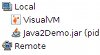
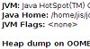
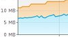
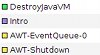
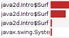
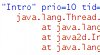
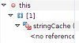
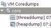
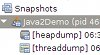
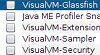

VisualVM is a tool to monitor and troubleshoot Java applications. It runs on Oracle/Sun JDK 6, but is able to monitor applications running on JDK 1.4 and higher. It utilizes various available technologies like jvmstat, JMX, the Serviceability Agent (SA), and the Attach API to get the data and automatically uses the fastest and most lightweight technology to impose minimal overhead on monitored applications.
With the out-of-the-box features it perfectly fits all the requirements of application developers, system administrators, quality engineers and - last but not least - application users submitting bug reports containing all the necessary information.
Display local and remote Java applications. VisualVM automatically detects and lists locally and remotely running Java applications (jstatd must be running on the remote host).
You can also define applications manually by JMX connection. This way you can easily see what Java applications are running on your system or check if a remote J2EE server process is alive.
Display application configuration and runtime environment. For each application VisualVM shows basic runtime information: PID, main class, arguments passed to java process, JVM version, JDK home, JVM flags and arguments and system properties.
Monitor application performance and memory consumption. VisualVM monitors application CPU usage, GC activity, heap and permanent generation memory, number of loaded classes and running threads. You can easily detect suspicious memory consumption and take an action - invoke garbage collection in the application or take a heap dump and browse the contents of application heap.
Monitor application threads. All threads running in a Java process are displayed in a timeline and table. You can track thread activity and uncover inefficient patterns like blocked Event Dispatch Thread or unused worker threads.
Profile application performance or analyze memory allocation. VisualVM includes a built-in application profiler which can visualize where most of the time is being spent or which objects consume most of the memory by just one mouse click without any additional configuration.
Take and display thread dumps. Taking and displaying a thread dump is as easy as clicking a mouse button. You don't need to deal with the command line at all to determine what's currently happening in the application. Moreover, simultaneous thread dumps of multiple applications can be taken at once to start uncovering distributed deadlocks.
Take and browse heap dumps. When you need to browse contents of application memory or uncover a memory leak in your application, you'll find the built-in HeapWalker tool really handy.
It can read files written in hprof format and is also able to browse heap dumps created by the JVM on an OutOfMemoryException.
Analyze core dumps. When a Java process crashes, a core dump can be generated by the JVM containing important information about application state at the time of the crash. VisualVM is able to display application configuration and runtime environment and to extract thread and heap dumps from the core dump.
Analyze applications offline. VisualVM is able to save application configuration and runtime environment together with all taken thread dumps, heap dumps and profiler snaphots into a single application snapshot which can be later processed offline. This is especially useful for bug reports where users can provide a single file containing all the necessary information to identify runtime environment and application state.
 Since VisualVM is built on the NetBeans Platform, its architecture is modular and easy to extend with plugins. There are various plugins available on the VisualVM Plugin Center including 3rd party plugins, other plugins can be obtained as separate downloads from their respective authors. You can check the list of currently available plugins at the Plugins page.
If you need a special feature or support for a proprietary tool, you can implement your own plugin. It's easy and there is plenty of information and sample code available for both the NetBeans Platform and VisualVM APIs. A good place to start is the Developer Documentation page.
VisualVM can be integrated with your IDE to monitor and analyze the code iteratively during development. Integration is available for these IDEs:
| Feature | JDK 1.4.2 local/remote | JDK 5 local/remote | JDK 6 local | JDK 6 remote |
| Overview | ||||
| System Properties (in Overview) | ||||
| Monitor | ||||
| Threads | ||||
| Profiler | ||||
| Thread Dump | ||||
| Heap Dump | ||||
| Enable Heap Dump on OOME | ||||
| MBean Browser (plugin) | ||||
| Wrapper for JConsole plugins (plugin) |
{kind=link}
{kind=link}
{kind=link}
{kind=link}
{kind=link}
{kind=link}
{kind=link}
{kind=link}
{kind=link}
{kind=link}